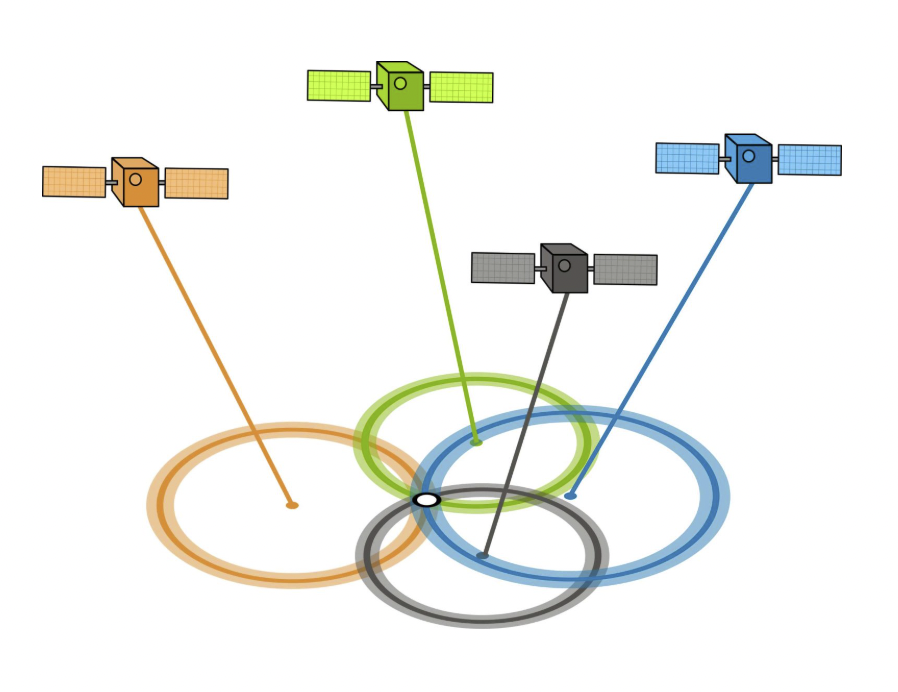
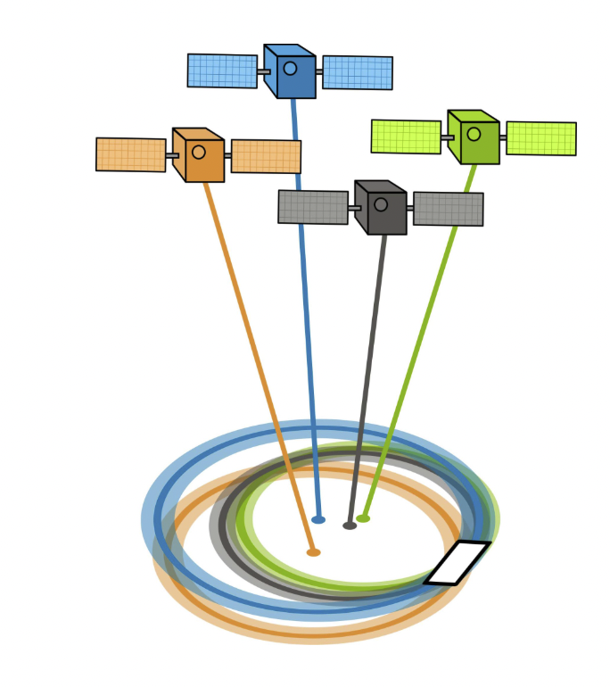
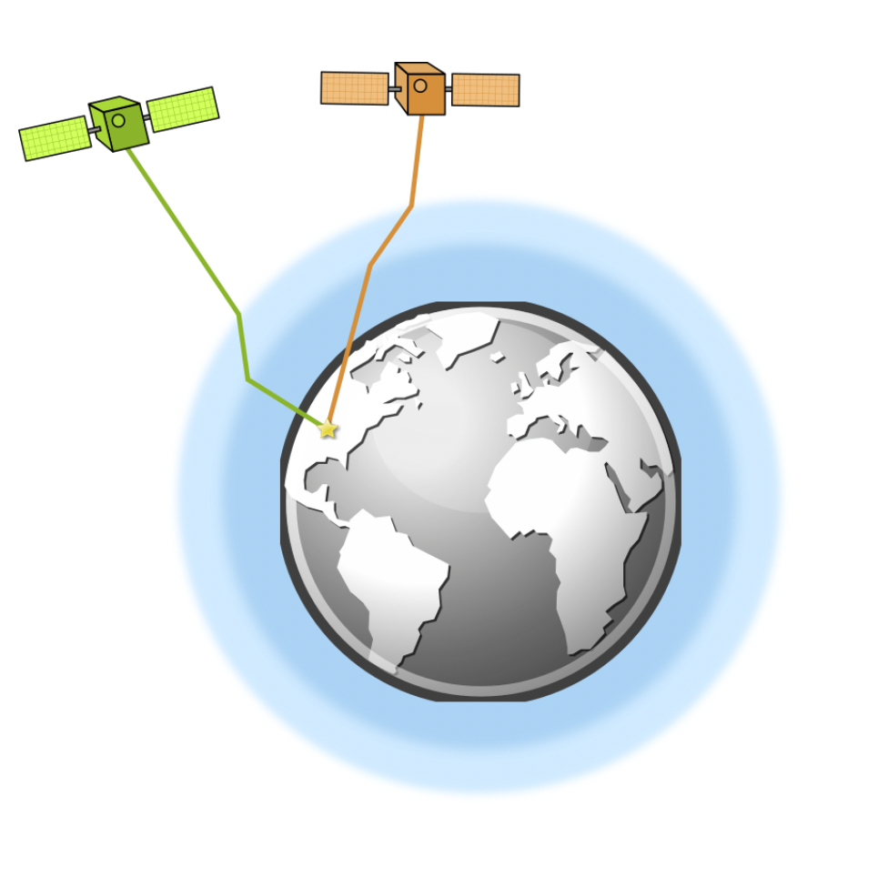
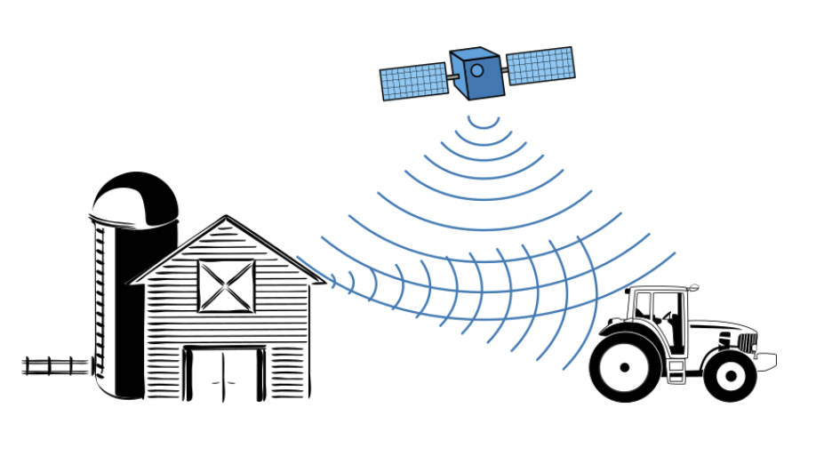

GPS Accuracy: DOP, Multipath, and Error Sources
How Accurate is GPS?
A well-designed GPS receiver can achieve horizontal accuracy of 3 meters or better, and vertical accuracy of 5 meters or better (95% of the time). With augmentation, sub-meter accuracy is possible. However, several error sources can degrade this accuracy.
Main Sources of GPS Error
- Satellite geometry (DOP)
- Atmospheric effects (ionosphere, troposphere)
- Multipath (signal reflection)
- Satellite clock and ephemeris errors
- Receiver noise and environment
Satellite Geometry: DOP
GDOP (Geometric Dilution of Precision) and PDOP (Position Dilution of Precision) describe the error caused by the relative position of the GPS satellites. The more widely spread the satellites are in the sky, the better the DOP and the more precise your position.
When satellites are well spread, DOP is low and accuracy is high.
When satellites are close together, DOP is high and accuracy is degraded.
Atmospheric Refraction
The troposphere and ionosphere can change the speed of GPS signals, causing refraction. This can introduce errors of up to 5 meters. Dual-frequency GPS can minimize this error.
Multipath Effects
Multipath occurs when GPS signals bounce off nearby structures (buildings, mountains), causing the receiver to detect the same signal twice at different ranges. This can introduce errors of about 1 meter.
Satellite Time and Location (Ephemeris)
The accuracy of a GPS satellite's atomic clock is about one nanosecond per tick. Small errors in satellite time or ephemeris (orbital position) can introduce a few meters of error in the final position solution.
GPS Trilateration and Ephemeris Error
GPS receivers use trilateration of time signals from satellites to determine position. If the satellite's position (ephemeris) is not perfectly known, this can introduce additional error.
Summary and Best Practices
- Monitor DOP values and avoid high DOP periods for critical measurements.
- Use dual-frequency or augmented GPS for higher accuracy.
- Avoid multipath environments (open sky is best).
- Be aware of atmospheric conditions and satellite health.